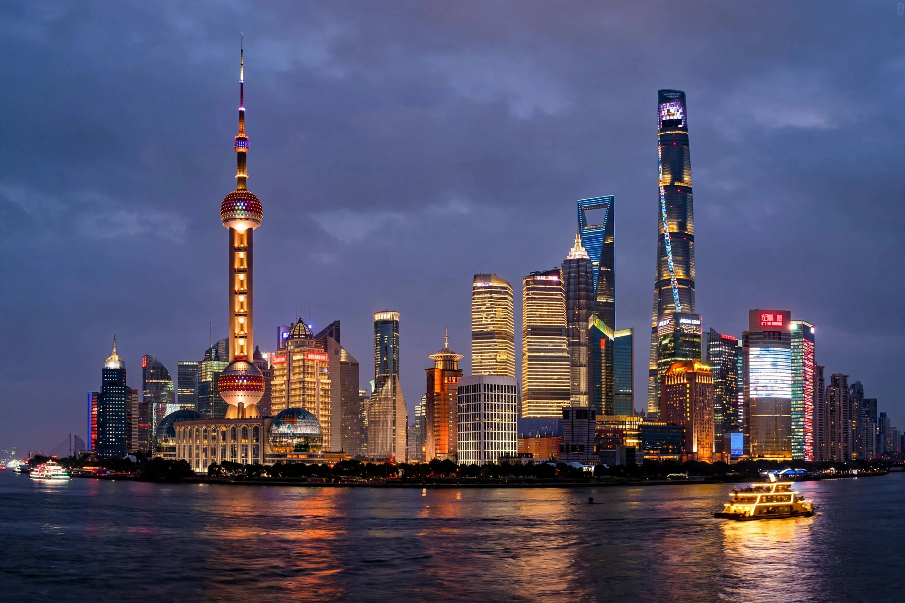

[Image placeholder: The Lujiazui skyline in Shanghai, China's financial centre]| Country | China |
|---|---|
| Currency | Renminbi (yuan; CNY) |
| Fiscal year | Calendar year |
| Trade organisations | WTO, APEC, BRICS, G20 |
| Population | About 1.41 billion |
| GDP | Second largest in the world by nominal GDP; largest by purchasing power parity |
| Main industries | Manufacturing, electronics, steel, automobiles, shipbuilding, textiles, services, e-commerce |
| Labour force | About 740 million |
The **economy of China** is a developing mixed socialist market economy incorporating industrial policies and strategic five-year plans. It is the world's second-largest economy by nominal GDP, behind the United States, and since about 2016 the largest by purchasing power parity (PPP). China accounted for roughly 18–19% of the global economy in recent years.
Since the reform and opening up policies began in 1978 under Deng Xiaoping, China has been among the world's fastest-growing major economies, lifting hundreds of millions of people out of poverty. Growth has slowed in the 2020s amid a property-sector downturn, local-government debt, weak consumer demand and an ageing, shrinking population.
For most of the two millennia to the nineteenth century, China had one of the largest and most advanced economies in the world. After 1978, market reforms, special economic zones such as Shenzhen, foreign direct investment and export-led industrialisation transformed the economy; China joined the World Trade Organization in 2001 and became the world's largest exporter of goods in 2009 and the largest manufacturing nation around 2010.
China is the world's largest manufacturer, producing a dominant share of global steel, ships, electronics, solar panels and, increasingly, electric vehicles and batteries through firms such as BYD and CATL. Services now contribute the largest share of GDP, agriculture employs a shrinking minority, and state-owned enterprises remain prominent in banking, energy, telecoms and heavy industry. The four largest banks in the world by assets are Chinese state banks.
China is the largest trading partner of most countries and the centrepiece of Asian supply chains. Its currency, the renminbi, is managed against a basket of currencies and is not freely convertible on the capital account. The Belt and Road Initiative has financed infrastructure across Asia, Africa and beyond since 2013, while initiatives such as Made in China 2025 aim to move industry up the value chain.
Economists point to the property crisis that began with developers such as Evergrande in 2021, high youth unemployment, deflationary pressure, US–China trade and technology tensions, and demographic decline as headwinds. The government has responded with targeted stimulus, support for advanced manufacturing, and a policy emphasis on 'high-quality development'.